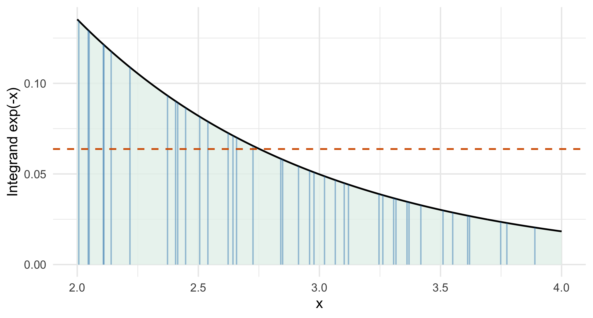

5 Monte Carlo Simulation and Variance Reduction
In Chapter 4: Generating Random Variables, we learned how to draw observations from a probability model. We now use those draws to estimate an integral, expectation, or probability, and to quantify the numerical uncertainty in that estimate.
The next question is not only how to generate more observations. It is how to get a more precise answer from the same computational effort. Antithetic variables and control variates do this by changing the random quantity we average while preserving its expectation.
5.1 Overview
This chapter follows a common sequence: identify the target, construct an unbiased contribution, average independent units, and report Monte Carlo error.
| Question | Main tool |
|---|---|
| How can an integral become an average? | Write it as an expectation |
| How uncertain is the numerical answer? | Monte Carlo standard error (MCSE) |
| How many replications are needed? | The \(1/\sqrt{N}\) rule and a pilot run |
| Can two evaluations cancel each other’s noise? | Antithetic variables |
| Can a known expectation remove predictable noise? | Control variates |
| Which method should we prefer? | Compare variance at a common computational budget |
We use \(N\) for the number of contributions in an ordinary Monte Carlo average. In an antithetic calculation, \(K\) is the number of independent pairs, with \(N=2K\) function evaluations. When we repeat an entire simulation experiment to compare methods, \(B\) denotes the number of independent experiments.
NoteReproducible computation
Set the seed once before an experiment, then allow the random-number generator to advance. Resetting the same seed inside every replication repeats the same input and does not create independent replications.
All examples below use a fixed seed for reproducibility. Closed-form answers are included as checks; Monte Carlo is useful when the corresponding answer is difficult to obtain analytically.
5.2 From an Integral to an Expectation
For a random input \(X\sim f\), define a contribution \(Y=H(X)\) with
\[ \theta=\mathbb{E}_f[H(X)]. \]
If \(X_1,\ldots,X_N\) are independent draws from \(f\), the ordinary Monte Carlo estimator is
\[ \widehat\theta_N=\frac{1}{N}\sum_{i=1}^N H(X_i) =\overline Y_N. \]
The function being averaged determines the target. Averaging the simulated inputs estimates \(\mathbb{E}[X]\); averaging their squares estimates \(\mathbb{E}[X^2]\); averaging an event indicator estimates a probability.
For independent, identically distributed contributions \(Y_i\):
- If \(\mathbb{E}|Y_i|<\infty\), then \(\mathbb{E}[\overline Y_N]=\theta\) and \(\overline Y_N\to\theta\) almost surely by the strong law of large numbers.
- If also \(\operatorname{Var}(Y_i)=\sigma_Y^2<\infty\), then
\[ \operatorname{Var}(\overline Y_N)=\frac{\sigma_Y^2}{N}. \]
- If \(0<\sigma_Y^2<\infty\), the central limit theorem gives
\[ \frac{\overline Y_N-\theta}{\sigma_Y/\sqrt{N}} \ \xrightarrow{d}\ N(0,1). \]
Unbiasedness is a statement about repeated experiments. It does not mean that one simulated answer equals \(\theta\).
5.2.1 Probabilities as averages of indicators
For an event \(A\),
\[ P(X\in A)=\mathbb{E}\big[\mathbf{1}\{X\in A\}\big], \qquad \widehat p=\frac{1}{N}\sum_{i=1}^N\mathbf{1}\{X_i\in A\}. \]
The contribution is 1 for a success and 0 otherwise. Thus \(\mathbb{E}[\widehat p]=p\) and \(\operatorname{Var}(\widehat p)=p(1-p)/N\).
Generate independent points \((U_i,V_i)\) uniformly in the unit square. A point lies in the quarter circle when \(U_i^2+V_i^2\leq1\). Since the circle occupies a proportion \(\pi/4\) of the square,
\[ \pi=\mathbb{E}\left[4\mathbf{1}\{U^2+V^2\leq1\}\right], \qquad \widehat\pi=4\,\frac{\text{number of points inside}}{N}. \]
set.seed(8670)
N <- 4000
u <- runif(N)
v <- runif(N)
pi_contributions <- 4 * (u^2 + v^2 <= 1)
mean(pi_contributions)
#> [1] 3.127Code
pi_points <- data.frame(u = u[1:600], v = v[1:600],
location = ifelse(pi_contributions[1:600] == 4, "Inside", "Outside"))
arc <- data.frame(u = seq(0, 1, length.out = 301))
arc$v <- sqrt(1 - arc$u^2)
ggplot(pi_points, aes(u, v)) +
geom_point(aes(color = location), alpha = .65, size = 1.2) +
geom_line(data = arc, linewidth = .8, color = "black") +
scale_color_manual(values = c(Inside = "#0072B2", Outside = "#D55E00")) +
coord_equal(xlim = c(0, 1), ylim = c(0, 1)) +
labs(x = "Uniform coordinate U", y = "Uniform coordinate V", color = NULL) +
theme(legend.position = "bottom")
We average \(4I_i\), not just \(I_i\), to estimate \(\pi\). Accordingly, \(\operatorname{Var}(\widehat\pi)=16(\pi/4)(1-\pi/4)/N\).
5.2.2 Integrals over a finite interval
For \(X\sim\operatorname{Uniform}(a,b)\), its density is \(1/(b-a)\) on the interval. Therefore,
\[ \theta=\int_a^b g(x)\,dx =(b-a)\mathbb{E}[g(X)], \qquad \widehat\theta_N=(b-a)\frac{1}{N}\sum_{i=1}^N g(X_i). \]
Equivalently, draw \(U_i\sim\operatorname{Uniform}(0,1)\) and set \(X_i=a+(b-a)U_i\). The width of the interval multiplies the average height.
- Identify \(a\), \(b\), and the integrand \(g\).
- Generate independent \(X_i\sim\operatorname{Uniform}(a,b)\).
- Form contributions \(Y_i=(b-a)g(X_i)\).
- Report \(\widehat\theta=\operatorname{mean}(Y)\) and \(\operatorname{MCSE}=\operatorname{sd}(Y)/\sqrt{N}\).
Consider the same integrand on two intervals:
\[ \theta_1=\int_0^1 e^{-x}\,dx=1-e^{-1}, \qquad \theta_2=\int_2^4 e^{-x}\,dx=e^{-2}-e^{-4}. \]
For the first integral, the contribution is \(e^{-U}\). For the second, it is \(2e^{-X}\), where \(X\sim\operatorname{Uniform}(2,4)\).
set.seed(8670)
N <- 10000
y01 <- exp(-runif(N))
y24 <- 2 * exp(-runif(N, min = 2, max = 4))
c(interval_01 = mean(y01), interval_24 = mean(y24))
#> interval_01 interval_24
#> 0.6293776 0.1166391| Interval | Estimate | Exact | MCSE |
|---|---|---|---|
| [0, 1] | 0.629378 | 0.632121 | 0.001814 |
| [2, 4] | 0.116639 | 0.117020 | 0.000652 |
Code
height_grid <- data.frame(x = seq(2, 4, length.out = 301))
height_grid$height <- exp(-height_grid$x)
set.seed(8670)
height_draws <- data.frame(x = runif(40, 2, 4))
height_draws$height <- exp(-height_draws$x)
ggplot(height_grid, aes(x, height)) +
geom_area(fill = "#E6F2EC", alpha = .8) +
geom_line(color = "black", linewidth = .8) +
geom_segment(data = height_draws, aes(xend = x, y = 0, yend = height),
color = "#0072B2", alpha = .4) +
geom_hline(yintercept = mean(height_draws$height),
linetype = "dashed", color = "#D55E00", linewidth = .8) +
labs(x = "x", y = "Integrand exp(-x)")
The curve here is an integrand, not a probability density on \([2,4]\). Its area is the quantity to be estimated and need not equal 1.
Exercise 5.1 (In Class: Find the Missing Factor) For \(\theta=\int_2^4e^{-x}\,dx\), a student generates x <- runif(N, 2, 4) and reports mean(exp(-x)).
- What does this average estimate?
- Correct both the estimate and its MCSE.
Solution 5.1.
- The uniform density is \(1/2\), so \(\mathbb{E}[e^{-X}]=\theta/2\).
- Use
y <- 2 * exp(-x), thenmean(y)andsd(y) / sqrt(N). The factor 2 changes both the estimate and its standard error; it multiplies the variance by 4.
5.3 Monte Carlo Error and Precision
The variation of individual contributions and the uncertainty of their average are different quantities:
| Quantity | Meaning | Estimate from independent contributions |
|---|---|---|
| \(\sigma_Y^2\) | Variance of one contribution | var(y) |
| \(\sigma_Y^2/N\) | Variance of the Monte Carlo estimator | var(y) / N |
| \(\sigma_Y/\sqrt{N}\) | Monte Carlo standard error | sd(y) / sqrt(N) |
R’s var() uses the sample-variance denominator \(N-1\). Consequently,
\[ s_Y^2=\frac{1}{N-1}\sum_{i=1}^N(Y_i-\overline Y)^2, \qquad \widehat{\operatorname{MCSE}}=\sqrt{\frac{s_Y^2}{N}}. \]
A plug-in estimate using denominator \(N\) differs by a factor \((N-1)/N\) at the variance level. We use the sample-variance convention consistently throughout this chapter.
5.3.1 A Monte Carlo confidence interval
With independent contributions and a finite variance, a large-sample approximate 95% Monte Carlo interval is
\[ \widehat\theta_N\ \pm\ 1.96\,\widehat{\operatorname{MCSE}}. \]
This interval describes uncertainty from the simulation, with the model and its parameters held fixed. It is not automatically a confidence interval for a parameter estimated from real data.
estimate <- mean(y01)
mcse <- sd(y01) / sqrt(length(y01))
c(estimate = estimate, MCSE = mcse,
lower = estimate - 1.96 * mcse, upper = estimate + 1.96 * mcse)
#> estimate MCSE lower upper
#> 0.629377598 0.001813567 0.625823007 0.632932190
WarningMore digits are not more information
Report precision consistent with MCSE. A long decimal expansion does not establish accuracy. More replications reduce Monte Carlo uncertainty, but they do not fix a wrong model, an incorrect contribution, or a coding error.
For a rare event, zero simulated successes do not establish zero probability. The plug-in MCSE can also be zero. Use an appropriate binomial interval or a method designed for rare events.
5.3.2 Planning the number of replications
If \(\sigma_Y^2\) is known, an MCSE target \(\varepsilon\) suggests
\[ N\geq\frac{\sigma_Y^2}{\varepsilon^2}. \]
If the goal is a 95% interval half-width at most \(h\), the corresponding planning rule is
\[ N\gtrsim\frac{1.96^2\sigma_Y^2}{h^2}. \]
When \(\sigma_Y^2\) is unknown, estimate it in a pilot run, choose a production sample size, and generate a fresh production run. A pilot estimate gives a planning approximation, not a guaranteed error bound.
sigma2 <- 2
epsilon <- c(0.1, 0.05, 0.01, 0.005, 0.001)
data.frame(target_MCSE = epsilon,
required_N = ceiling(sigma2 / epsilon^2))
#> target_MCSE required_N
#> 1 0.100 2e+02
#> 2 0.050 8e+02
#> 3 0.010 2e+04
#> 4 0.005 8e+04
#> 5 0.001 2e+06Halving MCSE requires about four times as many replications. Reducing it from \(0.01\) to \(0.0001\) requires about 10,000 times as many.
Code
set.seed(8670)
precision_sizes <- c(50, 100, 200, 500, 1000, 2000, 5000)
variance_exp_minus <- (1 - exp(-2)) / 2 - (1 - exp(-1))^2
precision_results <- data.frame(N = precision_sizes)
precision_results$empirical <- vapply(precision_sizes, function(n) {
sd(replicate(400, mean(exp(-runif(n)))))
}, numeric(1))
precision_results$theoretical <- sqrt(variance_exp_minus / precision_sizes)
ggplot(precision_results, aes(N)) +
geom_line(aes(y = theoretical, color = "Theoretical MCSE"), linewidth = .8) +
geom_point(aes(y = empirical, color = "SD across experiments"), size = 2.7) +
scale_x_log10(breaks = precision_sizes) +
scale_y_log10() +
scale_color_manual(values = c("Theoretical MCSE" = "black",
"SD across experiments" = "#0072B2")) +
labs(x = "Contributions per experiment N",
y = "Standard deviation of the estimate", color = NULL) +
theme(legend.position = "bottom")
Exercise 5.2 (In Class: MCSE or Interval Width?) A pilot calculation gives MCSE \(0.02\) using \(N=1000\). Approximately how many contributions are needed for MCSE \(0.005\)? If \(0.005\) instead refers to a 95% interval half-width, should the answer be larger or smaller?
Solution 5.2. The MCSE must decrease by a factor of 4, so use \(4^2(1000)=16000\) contributions. For a half-width of \(0.005\), the target MCSE is \(0.005/1.96\), so the required number is larger: approximately \(16000(1.96)^2=61466\) after rounding up.
5.4 One Target, Different Monte Carlo Estimators
The standard normal CDF is
\[ \Phi(x)=\int_{-\infty}^{x}\phi(z)\,dz, \qquad \phi(z)=\frac{1}{\sqrt{2\pi}}e^{-z^2/2}. \]
We cannot sample uniformly over \((-\infty,x]\). Instead, we can represent the same probability in two different ways.
5.4.1 Method 1: indicators of normal draws
If \(Z\sim N(0,1)\), then \(\Phi(x)=\mathbb{E}[\mathbf{1}\{Z\leq x\}]\). Draw independent standard normals and average their indicators.
set.seed(8670)
x <- 2
N <- 10000
indicator_y <- as.numeric(rnorm(N) <= x)
c(estimate = mean(indicator_y),
MCSE = sd(indicator_y) / sqrt(N),
exact = pnorm(x))
#> estimate MCSE exact
#> 0.978600000 0.001447209 0.977249868For \(p=\Phi(x)\), the exact estimator variance is \(p(1-p)/N\). A commonly used plug-in MCSE is \(\sqrt{\widehat p(1-\widehat p)/N}\); sd(indicator_y) / sqrt(N) uses the sample-variance correction described above.
5.4.2 Method 2: transform a bounded integral
For \(x>0\), symmetry and the substitution \(z=xu\) give
\[ \Phi(x)=\frac12+\int_0^x\phi(z)\,dz =\frac12+\int_0^1x\phi(xu)\,du. \]
Thus, for \(U\sim\operatorname{Uniform}(0,1)\), define
\[ H_x(U)=\frac12+x\phi(xU), \qquad \mathbb{E}[H_x(U)]=\Phi(x). \]
For \(x<0\), apply the positive-\(|x|\) construction and use \(\Phi(x)=1-\Phi(|x|)\). At \(x=0\), the answer is exactly \(1/2\).
set.seed(8670)
u <- runif(N)
uniform_y <- 0.5 + x * dnorm(x * u) # x > 0 here
c(estimate = mean(uniform_y),
MCSE = sd(uniform_y) / sqrt(N),
exact = pnorm(x))
#> estimate MCSE exact
#> 0.973362243 0.002312272 0.977249868Both methods are unbiased for the same target. Their contributions have different variances, so their MCSEs need not be similar.
Code
set.seed(8670)
N <- 10000
z <- rnorm(N)
u <- runif(N)
cdf_results <- do.call(rbind, lapply(c(2, 2.5), function(x) {
contributions <- list(Indicator = as.numeric(z <= x),
Uniform = 0.5 + x * dnorm(x * u))
do.call(rbind, lapply(names(contributions), function(method) {
values <- mc_summary(contributions[[method]])
data.frame(x = x, Method = method, Estimate = values["estimate"],
MCSE = values["MCSE"], Lower = values["lower"],
Upper = values["upper"], Exact = pnorm(x), row.names = NULL)
}))
}))
knitr::kable(cdf_results, digits = 5, booktabs = TRUE)| x | Method | Estimate | MCSE | Lower | Upper | Exact |
|---|---|---|---|---|---|---|
| 2.0 | Indicator | 0.97860 | 0.00145 | 0.97576 | 0.98144 | 0.97725 |
| 2.0 | Uniform | 0.97524 | 0.00230 | 0.97074 | 0.97975 | 0.97725 |
| 2.5 | Indicator | 0.99370 | 0.00079 | 0.99215 | 0.99525 | 0.99379 |
| 2.5 | Uniform | 0.99073 | 0.00329 | 0.98428 | 0.99718 | 0.99379 |
The interval is an approximate Monte Carlo interval for a fixed CDF value. It does not describe uncertainty about a population mean or variance.
Code
cdf_grid <- seq(.1, 3, length.out = 100)
cdf_variances <- data.frame(
x = cdf_grid,
Indicator = pnorm(cdf_grid) * pnorm(cdf_grid, lower.tail = FALSE),
Uniform = vapply(cdf_grid, function(a) {
integrate(function(u) (a * dnorm(a * u))^2, 0, 1)$value -
(pnorm(a) - .5)^2
}, numeric(1))
)
cdf_variance_long <- rbind(
data.frame(x = cdf_grid, variance = cdf_variances$Indicator,
Method = "Normal indicator"),
data.frame(x = cdf_grid, variance = cdf_variances$Uniform,
Method = "Uniform integral")
)
ggplot(cdf_variance_long, aes(x, variance, color = Method)) +
geom_line(linewidth = .85) +
scale_y_log10() +
scale_color_manual(values = c("Normal indicator" = "#0072B2",
"Uniform integral" = "#D55E00")) +
labs(x = "CDF evaluation point x", y = "Variance of one contribution",
color = NULL) +
theme(legend.position = "bottom")
Figure 5.5 compares exact contribution variances, evaluated by deterministic numerical integration where needed. A single estimate that happens to be closer to pnorm(x) is not evidence that its method is more efficient.
5.5 Variance Reduction and Fair Comparisons
For unbiased estimators of the same \(\theta\), smaller variance means greater statistical precision. Variance reduction aims to improve precision without simply increasing the simulation budget.
Let \(V_0\) be the variance of a baseline estimator and \(V_1\) the variance of a competing estimator at a specified common budget.
\[ \text{Fraction of variance removed}=1-\frac{V_1}{V_0}, \qquad \text{Relative efficiency}=\frac{V_0}{V_1}. \]
Multiply the first quantity by 100 to express it as a percentage. The standard-error ratio is \(\sqrt{V_1/V_0}\).
For example, \(V_1=V_0/4\) means 75% lower variance, twice the precision in standard-error terms, and relative efficiency 4. It means 50% lower standard error, not 75%.
Three comparisons answer different questions:
- Same number of contributions: useful when contributions cost about the same.
- Same number of expensive function evaluations: appropriate when evaluating the model dominates computation.
- Same total computation time: include pilot runs, setup, and additional control calculations.
If estimators are biased, variance alone is insufficient. Compare mean squared error, \(\operatorname{MSE}=\operatorname{Var}+\operatorname{Bias}^2\), as well as computational cost.
NoteHow to compare methods in a simulation experiment
Repeat each complete estimator \(B\) times using fresh random input. The variance across the \(B\) estimates estimates the estimator’s variance. The standard deviation across estimates should be similar to their reported MCSEs when those MCSEs are appropriate.
Within one run, var(y) estimates the variance of a contribution. It is not the variance of the estimate mean(y).
5.6 Antithetic Variables
Suppose \(\theta=\mathbb{E}[H(U)]\) for \(U\sim\operatorname{Uniform}(0,1)\). Both \(U\) and \(1-U\) are uniform, so both \(H(U)\) and \(H(1-U)\) have expectation \(\theta\).
The construction deliberately makes these two contributions dependent. If a high value from one is often accompanied by a low value from the other, their average fluctuates less.
- Generate independent \(U_1,\ldots,U_K\sim\operatorname{Uniform}(0,1)\).
- Evaluate \(Y_k=H(U_k)\) and \(Y'_k=H(1-U_k)\).
- Form the pair average \(A_k=(Y_k+Y'_k)/2\).
- Estimate \(\theta\) by \(\overline A_K\) and calculate MCSE as \(s_A/\sqrt{K}\).
There are \(K\) independent units and \(2K\) function evaluations.
5.6.1 Why negative correlation helps
Write \(\operatorname{Var}(Y_k)=\operatorname{Var}(Y'_k)=\sigma_Y^2>0\) and \(\operatorname{Corr}(Y_k,Y'_k)=\rho\). Then
\[ \operatorname{Var}(A_k) =\frac14\left(\sigma_Y^2+\sigma_Y^2+2\rho\sigma_Y^2\right) =\frac{\sigma_Y^2}{2}(1+\rho). \]
At the common budget \(N=2K\) evaluations,
\[ \operatorname{Var}(\widehat\theta_{\mathrm{anti}}) =\frac{\sigma_Y^2}{N}(1+\rho), \qquad \operatorname{Var}(\widehat\theta_{\mathrm{plain}}) =\frac{\sigma_Y^2}{N}. \]
Thus, the variance ratio is \(1+\rho\). Negative correlation helps; zero correlation gives no variance gain at this budget; positive correlation makes the estimator worse.
If \(H\) is monotone on \((0,1)\) and has finite variance, then
\[ \operatorname{Cov}\{H(U),H(1-U)\}\leq0. \]
One function moves upward as \(U\) increases while the other moves downward. More formally, for an independent copy \(V\) of \(U\),
\[ 2\operatorname{Cov}\{a(U),b(U)\} =\mathbb{E}[(a(U)-a(V))(b(U)-b(V))]. \]
The product is nonpositive when \(a\) is increasing and \(b\) is decreasing. Apply this to \(a(u)=H(u)\) and \(b(u)=H(1-u)\), reversing both directions if \(H\) is decreasing.
For inverse-transform generation, the relevant function is the whole contribution \(H(u)=g(F^{-1}(u))\). Negative correlation of the inputs \(U\) and \(1-U\) alone does not guarantee negative correlation of arbitrary outputs.
The idea also extends to independent uniform coordinates: replace every coordinate \(U_j\) by \(1-U_j\). A coordinatewise monotone contribution gives nonpositive covariance under this product distribution. For a more complicated simulation, check the dependence of the final contributions.
For \(x>0\), use the decreasing contribution \(H_x(u)=1/2+x\phi(xu)\) from Section 5.4. The pair average is
\[ A_k=\frac12+\frac{x}{2}\{\phi(xU_k)+\phi(x(1-U_k))\}. \]
set.seed(8670)
x <- 1.95
K <- 5000
u <- runif(K)
pair_y <- 0.5 + x * (dnorm(x * u) + dnorm(x * (1 - u))) / 2
c(estimate = mean(pair_y), MCSE = sd(pair_y) / sqrt(K),
exact = pnorm(x))
#> estimate MCSE exact
#> 0.9743663875 0.0001434375 0.9744119405The full implementation below also handles negative \(x\) by symmetry. evaluations counts function evaluations; units counts independent contributions or pair averages.
Full normal-CDF estimator with the correct independent units
mc_phi <- function(x, evaluations = 10000, antithetic = TRUE) {
stopifnot(length(x) == 1L, is.finite(x),
length(evaluations) == 1L, is.finite(evaluations),
evaluations >= 4, evaluations == floor(evaluations),
!antithetic || evaluations %% 2 == 0)
a <- abs(x)
units <- if (antithetic) evaluations / 2 else evaluations
u <- runif(units)
y <- 0.5 + a * dnorm(a * u)
if (antithetic) {
reflected_y <- 0.5 + a * dnorm(a * (1 - u))
y <- (y + reflected_y) / 2
}
if (x < 0) y <- 1 - y
c(mc_summary(y), evaluations = evaluations, units = units)
}
set.seed(8670)
phi_comparison <- rbind(
Plain = mc_phi(1.95, evaluations = 1000, antithetic = FALSE),
Antithetic = mc_phi(1.95, evaluations = 1000, antithetic = TRUE)
)
knitr::kable(phi_comparison[, c("estimate", "MCSE", "evaluations", "units")],
digits = 6, booktabs = TRUE)| estimate | MCSE | evaluations | units | |
|---|---|---|---|---|
| Plain | 0.972297 | 0.007033 | 1000 | 1000 |
| Antithetic | 0.974625 | 0.000443 | 1000 | 500 |
WarningCalculate MCSE from pairs
The \(2K\) values obtained by concatenating the two sides of the pairs are dependent. Do not apply the independent-observation formula to that concatenated vector.
Use sd(pair_y) / sqrt(K). For independent repeated experiments, the pairing is recreated with fresh uniforms in each experiment.
Code
set.seed(8670)
anti_u <- runif(300)
anti_cloud <- data.frame(first = .5 + 1.95 * dnorm(1.95 * anti_u),
second = .5 + 1.95 * dnorm(1.95 * (1 - anti_u)))
anti_runs <- replicate(600, c(
Plain = unname(mc_phi(1.95, 1000, FALSE)["estimate"]),
Antithetic = unname(mc_phi(1.95, 1000, TRUE)["estimate"])
))
anti_long <- data.frame(Method = rep(rownames(anti_runs), each = ncol(anti_runs)),
Estimate = as.vector(t(anti_runs)))
anti_left <- ggplot(anti_cloud, aes(first, second)) +
geom_point(alpha = .45, color = "#0072B2", size = 1.3) +
labs(x = "H(U)", y = "H(1 - U)", title = "Dependence within a pair")
anti_right <- ggplot(anti_long, aes(Method, Estimate, fill = Method)) +
geom_boxplot(width = .5, outlier.alpha = .25) +
geom_hline(yintercept = pnorm(1.95), linetype = "dashed") +
scale_fill_manual(values = c(Plain = "#0072B2", Antithetic = "#D55E00")) +
labs(x = NULL, y = "Estimated Phi(1.95)", title = "Variation across experiments") +
theme(legend.position = "none")
grid::grid.newpage()
grid::pushViewport(grid::viewport(layout = grid::grid.layout(1, 2)))
print(anti_left, newpage = FALSE,
vp = grid::viewport(layout.pos.row = 1, layout.pos.col = 1))
print(anti_right, newpage = FALSE,
vp = grid::viewport(layout.pos.row = 1, layout.pos.col = 2))
grid::popViewport()
| Method | SD_across_experiments | Variance |
|---|---|---|
| Plain | 0.0068401 | 4.68e-05 |
| Antithetic | 0.0004589 | 2.00e-07 |
The estimated variance reduction is 99.55% at this evaluation budget. This is a reduction in variance, not the same percentage reduction in MCSE.
Exercise 5.3 (In Class: Does Reflection Always Help?) Let \(H(u)=(u-1/2)^2\). Compare \(H(U)\) and \(H(1-U)\). At the same total number of function evaluations, will antithetic pairing improve this estimator?
Solution 5.3. Since \(H(1-u)=(1/2-u)^2=H(u)\), the two contributions are identical. Their correlation is 1, so the antithetic-to-plain variance ratio is \(1+\rho=2\). Each pair repeats the same contribution; the estimator has only half as many independent pieces of information at this evaluation budget.
5.7 Control Variates
Suppose a contribution \(Y=g(X)\) has expectation \(\theta\). We also compute a control \(C=h(X)\) whose expectation \(\mu_C\) is known under the same input distribution.
If \(Y\) tends to be high when \(C\) is above its known mean, the deviation \(C-\mu_C\) tells us something about the simulation noise. We can subtract a suitable multiple of that deviation.
For any fixed constant \(c\), define the adjusted contribution
\[ Y_c=Y+c(C-\mu_C). \]
Since \(\mathbb{E}[C-\mu_C]=0\), we have \(\mathbb{E}[Y_c]=\theta\). For independent pairs \((Y_i,C_i)\), estimate \(\theta\) with
\[ \widehat\theta_c=\frac{1}{N}\sum_{i=1}^N \{Y_i+c(C_i-\mu_C)\}, \qquad \widehat{\operatorname{MCSE}}=\frac{s_{Y_c}}{\sqrt N}. \]
We use the plus-\(c\) convention. With a positively correlated control, the best \(c\) will be negative.
5.7.1 Choosing the coefficient
Assuming finite variances and \(\operatorname{Var}(C)>0\),
\[ \operatorname{Var}(Y_c) =\operatorname{Var}(Y)+c^2\operatorname{Var}(C) +2c\operatorname{Cov}(Y,C). \]
This is a quadratic in \(c\). Differentiating and setting the derivative to zero gives
\[ 2c\operatorname{Var}(C)+2\operatorname{Cov}(Y,C)=0 \quad\Longrightarrow\quad c^*=-\frac{\operatorname{Cov}(Y,C)}{\operatorname{Var}(C)}. \]
Substituting \(c^*\) into the variance formula yields
\[ \operatorname{Var}(Y_{c^*}) =\operatorname{Var}(Y) -\frac{\operatorname{Cov}(Y,C)^2}{\operatorname{Var}(C)} =\operatorname{Var}(Y)(1-\rho_{YC}^2). \]
The same ratio applies to averages of \(N\) independent adjusted contributions. A large absolute correlation helps, whether it is positive or negative. The fraction of variance removed at the optimal fixed coefficient is \(\rho_{YC}^2\).
Consider the target
\[ \theta=\mathbb{E}[e^U]=\int_0^1e^u\,du=e-1, \qquad U\sim\operatorname{Uniform}(0,1). \]
Use \(Y=e^U\) and \(C=U\). The control’s mean and variance are \(\mu_C=1/2\) and \(\operatorname{Var}(C)=1/12\). Integration by parts gives
\[ \mathbb{E}[Ue^U] =\left[(u-1)e^u\right]_0^1=1, \qquad \operatorname{Cov}(e^U,U)=1-\frac{e-1}{2}. \]
Therefore,
\[ c^*=-12\left(1-\frac{e-1}{2}\right) =-12+6(e-1) \approx-1.690309. \]
The ordinary and controlled contribution variances are
\[ \begin{aligned} \sigma_Y^2 &=\frac{e^2-1}{2}-(e-1)^2,\\ \sigma_{\mathrm{control}}^2 &=\frac{e^2-1}{2}-(e-1)^2 -12\left(1-\frac{e-1}{2}\right)^2. \end{aligned} \]
The covariance term is squared in the variance reduction. The coefficient itself uses the covariance without squaring it.
theta_exp <- exp(1) - 1
var_exp <- (exp(2) - 1) / 2 - theta_exp^2
cov_exp_u <- 1 - theta_exp / 2
c_star <- -cov_exp_u / (1 / 12)
var_control <- var_exp - cov_exp_u^2 / (1 / 12)
c(c_star = c_star, plain_variance = var_exp,
controlled_variance = var_control,
variance_reduction_percent = 100 * (1 - var_control / var_exp))
#> c_star plain_variance
#> -1.690309029 0.242035607
#> controlled_variance variance_reduction_percent
#> 0.003940223 98.372048243The contribution variance falls from about \(0.2420356\) to \(0.0039402\), a reduction of approximately 98.37%. Divide both variances by \(N\) for their estimator variances.
set.seed(8670)
N <- 10000
u <- runif(N)
plain_y <- exp(u)
controlled_y <- exp(u) + c_star * (u - 0.5)
rbind(Plain = mc_summary(plain_y),
Control = mc_summary(controlled_y))
#> estimate MCSE lower upper
#> Plain 1.726714 0.0049413853 1.717029 1.736399
#> Control 1.718739 0.0006251175 1.717514 1.719964Code
control_grid <- seq(0, 1, length.out = 301)
control_curves <- rbind(
data.frame(u = control_grid, value = exp(control_grid), Method = "Original"),
data.frame(u = control_grid,
value = exp(control_grid) + c_star * (control_grid - .5), Method = "Controlled")
)
ggplot(control_curves, aes(u, value, color = Method)) +
geom_line(linewidth = .9) +
geom_hline(yintercept = theta_exp, linetype = "dashed", color = "grey35") +
scale_color_manual(values = c(Original = "#0072B2", Controlled = "#D55E00")) +
labs(x = "Uniform input U", y = "Contribution", color = NULL) +
theme(legend.position = "bottom")
5.7.2 When the optimal coefficient is unknown
The expectation \(\mu_C\) must be known, but the covariance needed for \(c^*\) may be unknown. An independent pilot run can estimate the coefficient. Freeze that estimate, then use new draws in a production run.
Conditional on the pilot, the coefficient is fixed and each production adjustment still has expectation zero. The production estimator is therefore unbiased, provided the control mean is correct.
set.seed(8670)
pilot_u <- runif(1000)
c_hat <- -cov(exp(pilot_u), pilot_u) / var(pilot_u)
production_u <- runif(10000) # fresh draws; do not reset the seed
production_y <- exp(production_u) + c_hat * (production_u - 0.5)
c(coefficient = c_hat, mc_summary(production_y))
#> coefficient estimate MCSE lower upper
#> -1.6987553233 1.7186253605 0.0006270268 1.7173963881 1.7198543330
WarningWhat must be known, and what must be independent?
- The control mean must be known under the same model that generates the production draws. An incorrect mean generally introduces bias.
- Replacing \(\mu_C\) by the mean of the same production controls makes their centered average exactly zero; the adjusted estimate then equals the original sample mean.
- Estimating \(c\) and applying it to the same observations is not covered by the fixed-coefficient unbiasedness argument and need not be exactly unbiased. An independent pilot makes the argument transparent.
- Count pilot work and control calculations when comparing total computational cost.
Exercise 5.4 (In Class: Which Sign Removes the Noise?) Use the convention \(Y_c=Y+c(C-\mu_C)\). Suppose \(\operatorname{Cov}(Y,C)=0.6\) and \(\operatorname{Var}(C)=0.3\). Find \(c^*\). If \(Y=5\), \(C=1.4\), and \(\mu_C=1\), what is the adjusted contribution?
Solution 5.4. \(c^*=-0.6/0.3=-2\). The adjusted contribution is \(5-2(1.4-1)=4.2\). Because \(Y\) and \(C\) are positively correlated, an above-average control suggests an above-average contribution, so the adjustment moves it downward.
5.8 Compare Methods at a Common Budget
We now estimate \(\theta=\mathbb{E}[e^U]=e-1\) using ordinary Monte Carlo, antithetic pairs, and the control variate with the known analytic coefficient from the previous section.
Each method is defined using \(N=1000\) evaluations of the exponential function per experiment. Antithetic sampling uses \(K=500\) independent pairs; the other methods use 1000 independent contributions. We repeat the experiment \(B=800\) times.
The methods share base uniforms within an experiment to make the comparison reproducible. Different experiments use fresh uniforms. This is a comparison at a common function-evaluation budget, not a claim that all methods have identical running time.
Repeated experiments with the correct MCSE for each method
set.seed(8670)
N <- 1000
B <- 800
benchmark <- replicate(B, {
u <- runif(N)
raw_y <- exp(u)
pair_index <- seq_len(N / 2)
outputs <- list(
Plain = raw_y,
Antithetic = (raw_y[pair_index] + exp(1 - u[pair_index])) / 2,
Control = raw_y + c_star * (u - .5)
)
vapply(outputs, function(y) {
c(Estimate = mean(y), MCSE = sd(y) / sqrt(length(y)))
}, numeric(2))
})
benchmark_estimates <- benchmark["Estimate", , ]
benchmark_mcses <- benchmark["MCSE", , ]
benchmark_variances <- apply(benchmark_estimates, 1, var)
benchmark_table <- data.frame(
Method = rownames(benchmark_estimates),
Bias = rowMeans(benchmark_estimates) - theta_exp,
Empirical_SD = sqrt(benchmark_variances),
Mean_MCSE = rowMeans(benchmark_mcses),
Reduction_percent = 100 * (1 - benchmark_variances / benchmark_variances["Plain"]),
row.names = NULL
)
knitr::kable(benchmark_table, digits = c(0, 6, 6, 6, 2), booktabs = TRUE,
col.names = c("Method", "Empirical bias", "SD of estimates", "Mean MCSE",
"Variance removed (%)"))| Method | Empirical bias | SD of estimates | Mean MCSE | Variance removed (%) |
|---|---|---|---|---|
| Plain | -0.000317 | 0.015630 | 0.015550 | 0.00 |
| Antithetic | -0.000026 | 0.002758 | 0.002797 | 96.89 |
| Control | -0.000030 | 0.002030 | 0.001985 | 98.31 |
The reported MCSEs track the standard deviations across experiments. The small empirical biases fluctuate around zero; a nonzero average error from finitely many experiments is not, by itself, evidence of theoretical bias.
Code
benchmark_long <- data.frame(
Method = factor(rep(rownames(benchmark_estimates), each = B),
levels = c("Plain", "Antithetic", "Control")),
Estimate = as.vector(t(benchmark_estimates))
)
ggplot(benchmark_long, aes(Method, Estimate, fill = Method)) +
geom_boxplot(width = .5, outlier.alpha = .2) +
geom_hline(yintercept = theta_exp, linetype = "dashed") +
scale_fill_manual(values = c(Plain = "#0072B2", Antithetic = "#D55E00",
Control = "#009E73")) +
labs(x = NULL, y = "Estimated E[exp(U)]") +
theme(legend.position = "none")
NoteWhich method should I try?
| Available structure | Method to try | Main check |
|---|---|---|
| A simulator and an integrable contribution | Ordinary Monte Carlo | Correct target and independent units |
| A monotone contribution built from uniforms | Antithetic variables | Negative covariance of the outputs |
| A correlated, inexpensive quantity with known mean | Control variates | Correct control mean and coefficient sign |
| Several candidate methods | Repeated experiments | Same target, cost accounting, and valid MCSE |
A method’s name does not guarantee a gain. Inspect the structure of the contribution and compare precision at the budget that matters for the problem.
5.9 Concept Checks and Practice
Explain your reasoning before opening a solution. Keep track of the target, the contribution being averaged, and the number of independent units.
Exercise 5.5 (Concept Check: Choose or Mark True/False)
- T/F. An unbiased Monte Carlo estimator must move closer to the truth whenever more draws are added.
- Multiple choice. For independent contributions, MCSE is (A)
sd(y)or (B)sd(y) / sqrt(length(y)). - T/F. A 75% reduction in variance means a 75% reduction in standard error.
- Multiple choice. With 400 antithetic pairs, calculate MCSE from (A) the 800 concatenated values or (B) the 400 pair averages.
- T/F. A control with a strong negative correlation can be useful.
- T/F. A control mean estimated from the same production observations can always be substituted for a known mean without changing the variance-reduction argument.
Solution 5.5.
| Item | Answer | Reason |
|---|---|---|
| 1 | F | Unbiasedness concerns repeated experiments; convergence need not be monotone. |
| 2 | B | The standard error describes the average, not an individual contribution. |
| 3 | F | The standard-error ratio is the square root of the variance ratio. |
| 4 | B | Pair averages are the independent units. |
| 5 | T | The optimal variance reduction depends on squared correlation. |
| 6 | F | Centering by that same sample mean makes the average adjustment zero. |
Exercise 5.6 (Practice: Construct, Calculate, Diagnose)
- Integral and MCSE. Estimate \(\theta=\int_1^3x^2\,dx\) using \(X\sim\operatorname{Uniform}(1,3)\). State the contribution, the exact target, and the MCSE formula. A run with \(N=2500\) has contribution standard deviation 4.8; calculate an approximate 95% interval half-width.
- Antithetic budget. Suppose \(\operatorname{Var}(Y)=9\) and the correlation within a pair is \(-0.8\). With 2000 function evaluations, calculate the ordinary and antithetic estimator variances. What fraction of variance is removed?
- Control coefficient. Suppose \(\operatorname{Var}(Y)=4\), \(\operatorname{Var}(C)=1\), and \(\operatorname{Cov}(Y,C)=-1.5\). Under the plus-\(c\) convention, find \(c^*\), the controlled contribution variance, and the fraction of variance removed.
- Diagnose the code. A student forms
u <- runif(500)andy <- c(exp(u), exp(1-u)), then reportssd(y)/sqrt(1000)as MCSE. Give the corrected R calculation.
Solution 5.6.
- Write the contribution first. \(Y=2X^2\) and \(\theta=(3^3-1^3)/3=26/3\). MCSE is
sd(2*x^2)/sqrt(N). With the reported standard deviation, MCSE is \(4.8/50=0.096\), so the approximate 95% half-width is \(1.96(0.096)=0.18816\). - Count independent pairs. There are \(K=1000\) pairs. Ordinary variance is \(9/2000=0.0045\); antithetic variance is \((9/2000)(1-0.8)=0.0009\). The fraction removed is \(1-0.0009/0.0045=0.8\), or 80%.
- Use the covariance sign. \(c^*=-(-1.5)/1=1.5\). Controlled contribution variance is \(4-(-1.5)^2/1=1.75\). The fraction removed is \(1-1.75/4=0.5625\), or 56.25%.
- Average within pairs first.
pair_y <- (exp(u) + exp(1 - u)) / 2
estimate <- mean(pair_y)
mcse <- sd(pair_y) / sqrt(length(pair_y))The estimate equals mean(y), but the corrected MCSE respects the dependence within each pair.
5.10 Chapter Summary
Main Ideas
- Construct the right contribution. An integral becomes a Monte Carlo problem only after its expectation has been identified correctly.
- Report simulation uncertainty. For independent contributions, MCSE is their sample standard deviation divided by the square root of their count.
- Count the independent units. Antithetic sampling uses independent pair averages, not independent concatenated values.
- Exploit known structure. Antithetic variables use negative dependence; control variates use a correlated quantity with a known mean.
- Compare fairly. Distinguish variance reduction from standard-error reduction and account for evaluation, pilot, and control costs.
Connections to Other Chapters
- Chapter 4: Generating Random Variables supplies the simulation mechanisms used here.
- Chapter 3: Optimization explains the quadratic minimization that produces the optimal control coefficient.
- Later work on resampling and cross-validation will use repeated computations to study statistical procedures. The habit of identifying independent units and reporting simulation error remains useful.
5.11 Supplementary
The content here won’t be on the exam
5.11.1 Other variance-reduction ideas
Importance sampling and stratification are additional ways to change the simulation design while preserving the target.
NoteImportance sampling: change where you draw
To estimate \(\theta=\int g(x)f(x)\,dx\), draw from a normalized proposal density \(q\) and average
\[ H(X)=g(X)\frac{f(X)}{q(X)},\qquad X\sim q. \]
The proposal must be positive wherever \(g(x)f(x)\neq0\) (up to null sets). The importance weights correct the change of distribution. For finite-variance MCSE calculations, we also need \(\int g(x)^2f(x)^2/q(x)\,dx<\infty\).
A proposal that rarely visits important regions can produce enormous weights and poor precision. Sampling more often in an important region helps only when the weights are included correctly.
This ordinary importance estimator uses the normalized target density \(f\). With only an unnormalized target, a self-normalized ratio estimator is a different construction; it is generally biased at finite sample sizes. The cancellation used in rejection sampling does not automatically justify omitting a constant here.
NoteStratification: ensure that every region is represented
Partition the input space into strata with known probabilities \(w_h\). Estimate a conditional mean in each stratum, then combine the estimates:
\[ \widehat\theta_{\mathrm{strat}} =\sum_{h=1}^H w_h\overline Y_h. \]
With independent samples across and within strata,
\[ \operatorname{Var}(\widehat\theta_{\mathrm{strat}}) =\sum_{h=1}^H\frac{w_h^2\sigma_h^2}{n_h}. \]
For a uniform integral, one can divide the interval into equal subintervals and draw separately within each one. This prevents an entire subinterval from being missed by chance. The weights must reflect the stratum probabilities; unequal allocations do not justify an unweighted average of all draws.
Stratified importance sampling combines a changed sampling distribution with separate sampling within strata. Its weighting and variance calculation must reflect both choices.
References and Further Reading
This chapter adapts the instructor’s 2025 Monte Carlo Simulation and Variance Reduction notes, preserving the integral, normal-CDF, antithetic, and control-variate examples while updating their explanations, calculations, and presentation for 2026.
- Rizzo, M. L. (2007), Statistical Computing with R, Chapter 6, Chapman & Hall/CRC.
- Wasserman, L. (2003), All of Statistics: A Concise Course in Statistical Inference, Springer.
- For the R functions used here, consult
?runif,?rnorm,?pnorm,?integrate,?var, and?cov.